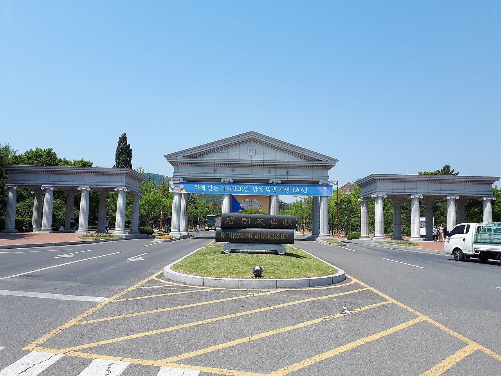

계명대학교(계명대)는 대구에 자리한 사립 종합대학입니다. 1954년에 세워졌고, 성서·대명·동산 세 캠퍼스를 두고 있으며 의과대학과 부속병원인 동산의료원을 갖춘 대구·경북권의 대표 사립대학입니다.
2027학년도 계명대는 정원 내 모집인원 4,600명대 가운데 88.7%인 4,100명대를 수시로 뽑았습니다. 사실상 신입생 열 명 중 아홉 명 가까이를 수시에서 선발하는 대학입니다. 보도에 따르면 원서접수(9월 7일~11일)에 3만여 명이 지원해 전체 경쟁률은 7.34대 1을 기록했습니다.
전형별로 보면 학생부교과 2,000명 가까이, 학생부종합 1,500명대, 실기·실적 600명대입니다. 올해 계명대의 변화는 한 문장으로 줄이면 이렇습니다. "교과전형은 면접으로 넓히고, 종합전형은 성적 점수를 걷어냈다." 아래에서 하나씩 살펴보겠습니다.
① 학생부종합 — 교과성적을 '점수'로 넣지 않는 블라인드 평가
가장 큰 변화는 학생부종합전형입니다. 보도에 따르면 올해부터 의예과·약학부를 제외한 모집단위에서 교과성적이 점수로 반영되지 않는 블라인드 평가를 도입했습니다. 대부분의 모집단위는 서류 100%로 선발하며(음악·미술·태권도 계열 제외), 평가 항목별 배점도 바뀌었습니다.
- 일반전형 — 학업 20점 · 진로 40점 · 공동체 40점
- 지역전형 — 학업 20점 · 진로 50점 · 공동체 30점
숫자를 보면 방향이 분명합니다. '학업'은 20점에 그치고, 나머지 80점이 진로와 공동체입니다. 지역전형은 진로 비중이 절반에 이릅니다. 내신 등급이 조금 아쉬워도, 한 방향으로 꾸준히 이어진 탐구와 학교생활 속 협력의 기록이 있다면 평가받을 여지가 커졌다는 뜻입니다.
다만 '성적을 안 본다'고 오해하시면 곤란합니다. 점수로 환산하지 않을 뿐, 학생부에 적힌 수업 태도·세부능력 및 특기사항은 결국 교과 수업 안에서 만들어집니다. 수업을 소홀히 한 학생에게 진로 40점짜리 기록이 쌓이기는 어렵습니다.
② 학생부교과 — 면접전형이 56개 학과로 늘었습니다
학생부교과전형에서는 면접전형이 크게 넓어졌습니다. 지난해 29개 학과 222명이던 규모가 올해 56개 학과 390명대로 늘었습니다. 선발 방식은 이렇습니다.
- 1단계 — 모집인원의 20배수 선발
- 2단계 — 1단계 성적 70% + 면접 30%
20배수라면 1단계 문턱은 넓은 편입니다. 대신 2단계에서 면접이 30%를 차지하기 때문에, 내신이 비슷한 지원자 사이에서는 면접이 순위를 뒤집을 수 있는 구조입니다. 교과 성적만으로 한두 칸 부족한 학생에게는 기회가 되고, 성적이 넉넉한 학생에게는 방심할 수 없는 변수가 됩니다.
교과 성적 반영 방식도 바뀌었습니다. 보도에 따르면 학생부교과 전형은 진로선택과목 40점과 일반교과 40점을 함께 반영하는 구조로 개편됐고, 일반교과는 계열별로 상위 3개 교과의 전 과목을 반영합니다.
- 인문사회계열 — 국어·수학·영어·사회(한국사 포함) 중 상위 3개 교과
- 자연공학계열(의예과·약학부 제외) — 국어·수학·영어·과학 중 상위 3개 교과, 한국사를 새로 반영
진로선택과목이 따로 40점을 차지한다는 점을 눈여겨보세요. 고2·고3 때 듣는 선택과목 성취도가 일반교과와 같은 무게로 들어간다는 뜻이니, "선택과목은 성취도만 나오니 덜 중요하다"는 생각은 계명대 교과전형에서는 통하지 않습니다.
③ 새로 생긴 지역의사 전형 — 교과 4명, 종합 11명
올해 계명대 의예과에는 지역의사 전형이 새로 생겼습니다. 두 갈래로 나뉩니다.
- 학생부교과 지역의사광역전형 — 4명. 수능최저 수학 포함 상위 3개 영역 등급 합 4 이내
- 학생부종합 지역의사진료전형 — 11명. 수능최저 수학 포함 상위 3개 영역 등급 합 5 이내
첫해부터 관심이 뜨거웠습니다. 보도에 따르면 교과 지역의사광역전형에는 4명 모집에 127명이 몰려 31.75대 1, 종합 지역의사진료전형에는 11명 모집에 101명이 지원했습니다. 두 전형 모두 수학이 반드시 포함된다는 점이 핵심입니다. 국어·영어·탐구로 등급 합을 맞추는 전략은 쓸 수 없습니다.
이름에 '지역의사'가 붙은 전형은 졸업 후 지역에서 일정 기간 근무하는 조건과 연결되는 것이 일반적입니다. 지원 자격과 입학 후 의무 조건은 반드시 계명대학교 입학처 모집요강 원문으로 확인하신 뒤 판단하시기 바랍니다.
④ 경쟁률로 본 계명대 — 의예과는 전형마다 20대 1을 넘었습니다
보도된 경쟁률 가운데 눈에 띄는 수치를 모았습니다.
- 의예과 — 학생부교과 일반 26대 1, 면접 28.8대 1, 학생부종합 23.83대 1
- 약학부 — 30명대 모집에 14.81대 1
- 전체 — 7.34대 1
입학처는 경쟁률이 안정적으로 유지된 배경으로 입시 제도 변화를 앞두고 안정 지원을 선호한 흐름을 들었습니다. 한편 경영대학에는 성인학습자를 위한 융합비즈니스학과(재직자 30명·평생학습자 40명 규모)가 새로 생겨 저녁·온라인 수업으로 운영됩니다. 고등학생 전형과는 별개이지만, 계명대 수시 인원을 볼 때 함께 알아 두시면 좋습니다.
⑤ 대구·경북 지역인재 — 2028학년도부터 요건이 달라집니다
계명대의 지역전형처럼 권역 고등학교 출신에게 열리는 문은, 2027학년도까지는 해당 권역 고등학교에서 3년 과정을 이수하는 것이 기본입니다.
그러나 법정 지역인재 선발 요건은 2028학년도부터 중학교 과정부터 해당 지역에서 이수하고 거주하도록 강화됩니다. 대구·경북에 사는 중학생 자녀를 두신 부모님이라면, 타 지역 고교 진학이나 이사를 고민하실 때 이 변화가 우리 아이가 노리는 전형에 어떻게 적용되는지 먼저 확인해 보셔야 합니다.
⑥ 학년별로 지금 챙길 것
- 고3 — 면접전형에 지원했다면 1단계 발표 전부터 자기 학생부를 다시 읽어 두세요. 지역의사 전형이나 수능최저가 걸린 전형이라면 남은 기간은 수학 등급 지키기가 최우선입니다. 면접·발표 일정은 입학처 공지로 확인하십시오.
- 고1·고2 — 종합전형을 생각한다면 진로·공동체 기록이 80점입니다. 수행평가와 탐구 활동을 한 방향으로 이어 가세요. 교과전형을 생각한다면 선택과목 성취도를 일반교과만큼 챙기셔야 합니다.
- 중학생 — 2028학년도 이후 지역인재 요건과, 의예·약학 계열을 목표로 한다면 수학이 반드시 들어가는 수능최저 구조를 기억해 두세요. 중학교 수학의 빈틈은 고등학교에서 가장 비싸게 돌아옵니다.
와와 학습코칭센터에서는 아이의 내신과 과목별 상태를 진단해, 목표 대학·전형의 기준에 맞춰 지금 무엇부터 채워야 할지 함께 정리해 드립니다. 가까운 센터에서 무료 상담을 받아 보실 수 있습니다.
※ 본 글의 모집규모·전형 구성·평가 배점·경쟁률은 계명대학교의 2027학년도 수시모집 관련 언론 보도를 바탕으로 정리했으며, 일부 인원 수치는 이해를 돕기 위해 범위로 표기했습니다. 지역의사 전형을 제외한 나머지 전형(의예과·약학부 일반 선발 포함)의 수능최저학력기준, 면접고사 및 합격자 발표 일정은 확인하지 못해 이 글에 담지 않았습니다. 또한 학생부교과 반영 방식 개편이 적용되는 전형의 범위, 지역전형의 지원 자격 세부 규정, 면접의 형식, 지역의사 전형의 지원 자격과 입학 후 의무 조건은 확정 표기하지 않았습니다. 사진은 과거에 촬영된 것으로 현재 모습과 다를 수 있습니다. 반드시 계명대학교 입학처의 2027학년도 수시모집요강 원문에서 본인 지원 모집단위 기준으로 최종 확인하시기 바랍니다.